The Australian Data Centre Pipeline
Mapping the Australian data centre build-out
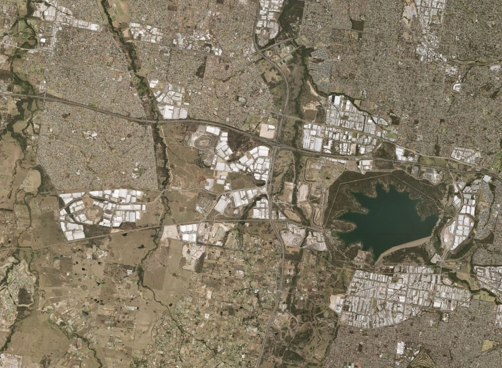
Executive summary
This report presents and analyses a new project-level dataset of Australia's data centre pipeline. We applied the methodology Science Works used for the UK, which reveals that:
- Australia is planning a data centre build-out that is extremely ambitious by its own historic standards. Developers plan to add about 10 GW of IT capacity by 2030, which would take the national fleet from about 1.75 GW to 11.7 GW, almost seven times today. That means building nearly nine times faster than over the last five years.
- Australia already hosts more data centre capacity per person than the UK or most of Europe, and the pipeline would make it the most compute-dense large economy. At about 63 watts per person, Australia is more than twice as compute-dense as the UK and level with the Netherlands. If the pipeline is delivered it would reach about 400 watts per person by 2030, above the US and almost four times the UK's.
- More than half of the 2030 capacity is still in the planning system. 24% of the capacity due by 2030 is under construction, against 13% in the UK, and another 23% is approved. The rest is under assessment (34%) or scoping (19%). Fourteen projects deliver half of the planned additions, and only a third of the capacity has a published completion date.
- Australia's build-out is led by operators with contracted demand, not land promoters looking for tenants. Wholesale and colocation operators such as CDC, NEXTDC and AirTrunk account for 60% of the capacity planned by 2030. Promoters without a disclosed tenant account for 23%, against 42% in the UK. Hyperscalers lease rather than build: they are building only 4% of the pipeline themselves, against 19% in the UK. Still, 81% of the planned capacity has no publicly named end user.
- Capacity is growing in Victoria and regional Australia, but Western Sydney remains the centre of gravity. Transmission capacity is the binding constraints on new capacity in Western Sydney. NSW and the ACT will hold 56% of capacity in 2030, down from 61%. A single 20 km belt of Western Sydney will house 35% of all new capacity. Transgrid says it has signed agreements for about 1.5 GW there and will have no transmission capacity for new connections beyond 2033. If delivered, the base pipeline would use 51–84 TWh a year by 2030, three to six times AEMO's forecast, and would need 16–28 GW of new wind and solar. NSW data centres could use between 44% and 74% of the electricity the state used in 2025. This power demand will liklely need significant behind the meter generation due to delays in the transmission build out and grid connections.
- Australia's desire to be the second home of US frontier model training is not locked in. Proponents of "compute for access" want 10–15 GW of training compute by 2030, traded for guaranteed access to frontier models, research compute and safety information. Ten regional gigawatt-class proposals add up to about 10 GW, but six are announced only, one has a named frontier tenant, and together they deliver about 1.2 GW by 2030 in our base view. Copyright is still the blocker. The labs treat licensing in Australia as a red line that could lead to US legal challenges of the fair use doctrine. Firmus's withdrawn ASX float in October 2026 showed that financing is fragile too.
- The NSW Investment Delivery Authority covers far more of the pipeline than the UK's AI Growth Zones, but there is little evidence yet that it speeds projects up. The twelve endorsed projects we can match to a planning record would deliver 26% of the capacity added nationally by 2030. Two were already approved before endorsement, three have been approved since, and seven are undetermined, including the two largest. Victoria's Development Facilitation Program, a planning pathway rather than a list, has approved several Melbourne campuses within three to four months of lodgement. A better national scheme would create Special Compute Zones with fixed boundaries and standing approvals, and publish what each endorsed project delivers. These could be either co-located with existing Renewable Energy Zones or create standing approvals for new renewable generation.
These findings rest on a dataset of 70 projects, compiled by sweeping the NSW Major Projects portal, Victoria's ministerial permits register, ACT, Queensland, Tasmanian and Western Australian planning records, council agendas, ASX filings, network operator documents and trade press as at 29 October 2026. Together they propose 23.4 GW of IT capacity. Where developers publish only grid or peak power, we convert it to IT capacity.1
Introduction
Data centres are the warehouses of the digital economy. They are buildings full of servers that store and process data, with their IT capacity measured in megawatts (MW). Australia's existing data centres mostly host cloud services for banks, retailers and governments, run payment systems and serve local copies of streaming video. Speed depends on distance, so they cluster where people and businesses are: two-thirds of today's data centre electricity use is in New South Wales and almost all the rest in Victoria. Newer data centres are built to train and run AI models. Each one needs far more capacity and, for training, less proximity to users.
To build a data centre in Australia you need to secure power, get planning approval, and then build. Construction is usually the simplest part. Power means a connection to the transmission or distribution network, and connection queues are long. Planning rules differ by state. In NSW, where most capacity is proposed, large data centres are State Significant Development, assessed by the state rather than local councils.2
Further detail: how a data centre gets built, state by state
Each state differs, but the stages are similar: secure power, get planning approval, then build. Choose a state.
New South Wales. NSW holds most of the pipeline, and has the most detailed rules for data centres.
Victoria. Victoria has two routes: a council permit, or a ministerial permit through the Development Facilitation Program. Since September 2026 its Sustainable Data Centre Action Plan adds energy, water and siting rules.
Sources: Victorian Government, Sustainable Data Centre Action Plan; Gadens, Data centre planning approvals in Victoria; Hall & Wilcox.
Queensland. Queensland has no planning category for data centres. They are approved by councils under ordinary development rules, which gives objectors more room to appeal than in NSW or Victoria.
Sources: Gadens, Data centre planning approvals in Queensland; McCullough Robertson.
Western Australia. Western Australia's main grid is not connected to the rest of the country, so power is the binding constraint. Large projects can bypass councils through a state pathway.
Sources: WA Department of Planning, Significant Development Pathway.
South Australia. South Australia has a pipeline of gigawatt-scale proposals but no approvals yet. It is legislating a dedicated route for data centres.
Sources: W.Media, South Australia proposes dedicated data centre legislation.
Tasmania. In Tasmania councils decide data centre applications. Power from Hydro Tasmania is the harder question.
Sources: Pulse Tasmania, George Town Council approves Bell Bay; HIA, October 2026.
Australian Capital Territory. In the ACT the territory planning authority decides. Canberra's data centres cluster in the industrial suburbs of Hume and Beard.
Sources: Canberra Times / ACM, September 2026.
Northern Territory. The Northern Territory has one small data centre market in Darwin and some of the largest remote proposals. Its grids are small and isolated, so large projects plan their own generation.
Sources: Reuters via The Star, November 2026.
Demand for AI is driving demand for data centres. Cheap, nearby computing would let Australian businesses and governments adopt AI quickly. Sensitive data is more secure when hosted onshore. Australia's cheap land, abundant renewable resources and political stability also make it a candidate to host compute for the region. Commonwealth Bank (CBA) economists assume Australia could capture a tenth of OpenAI and Anthropic's global compute demand.
At the same time, data centres are hungry for power, water and land. The NSW and Victorian grids are already preparing for coal closures, and some communities object to diesel generators, water use and noise. No one knows how much of the forecast demand for AI will materialise or how profitable it will be. How does Australia build as much capacity as it truly needs while limiting the costs?
To answer that, we need to start with some basic questions:
- How much data centre capacity are we planning to build?
- How does Australia's planned build-out compare internationally? Does our ambition match our record?
- How far are projects along the pipeline? How long will it take them to get through?
- Who is building the data centres, and for whom? Will supply meet demand?
- What is the compute for: training AI models or running them? Where should each go?
- Where in the country are the planned data centres? Can the grid and the renewable energy zones keep up?
- Can Australia trade compute for access to frontier AI, and what stands in the way?
- Is the main state intervention, the NSW Investment Delivery Authority, doing its job? If not, how could it be improved?
There is no national register of data centres. Planning files are spread across state portals and dozens of councils, and the NSW Government says it cannot publish the capacity of the projects it has endorsed because the information is commercially sensitive. We therefore built a project-level dataset from planning records, company announcements, ASX filings, network operator documents and trade press. We do not model delays, cancellations or grid constraints, so this is not a forecast. It is a record of what developers say they intend to build.
How much data centre capacity are we planning to build?
Figure 1 shows the aggregate pipeline. The base view includes every project that has left a trace in a planning system, from a SEARs request onwards. The scenario range runs from a floor, which counts only projects under construction or approved, to a ceiling, which adds every project we found that has only been announced.
At the start of 2026 Australia had about 1.75 GW of installed data centre IT capacity, mostly in Sydney and Melbourne. CBRE counts 950 MW live in Sydney and 580 MW in Melbourne. About 120 MW sits in Canberra, much of it serving government, and a few tens of megawatts each in Brisbane, Perth and Adelaide.3 Most of this fleet was built for cloud and enterprise hosting. It draws only about a quarter of its connected capacity, which is why AEMO measures just 5 TWh of use in 2025–26.
The pipeline involves plans for an unprecedented expansion.
- Developers aim to build nearly nine times faster before 2030 than they have over the past five years. Australia added roughly 1.1 GW between 2021 and 2025, about 230 MW a year. From 2026 to 2030 the pipeline would add 9.9 GW, about 2 GW a year. If the projects now in the planning system are delivered, national capacity would reach 11.7 GW by 2030, 6.7 times today (6.4–12.9 GW scenario range).
- The build-out continues beyond 2030. Projects already in the planning system would take capacity to 17.7 GW by 2035. Including announced projects with no paperwork yet, the ceiling is 24.1 GW. Most of that gap is a handful of regional gigawatt proposals: Firmus's two South Australian Southgate sites, NEXTDC's M5 in Melbourne, a gas-powered precinct near Darwin, Quantum DC at Tungkillo and Keppel at Hazelwood.
The expansion is being driven by much larger campuses built for AI.
- The average project in the pipeline is about 30 times larger than the average existing data centre. AEMO counts about 165 operating data centres, an average of roughly 11 MW each. The projects in our pipeline average 334 MW of IT capacity (median 154 MW), and twelve propose 700 MW or more. The UK's ratio is 17 times. Projects of this size are suited to AI training and large-scale inference, and each needs a transmission-scale grid connection.
- The pipeline is far smaller than the connection queue. AEMO reports 225 projects seeking almost 67 GW of connections, and NSW alone has 28 GW of requests, about three times the state's average demand. CBA and AEMO both expect only part of the announced pipeline to be built: CBA's central case adds about 4 GW by 2030 and 7 GW by the mid-2030s, under half of what the base pipeline adds.
How does Australia's planned build-out compare internationally? Does our ambition match our record?
To put the Australian pipeline in context, Figure 2 sets it against the figures Science Works reports for the UK, the EU and the US, which come from S&P Global's Datacenter KnowledgeBase. Our Australian series uses our own dataset, so the comparison is indicative rather than like for like.4
Absolute build-out, 2020–2030
Relative build-out, 2020–2030
Capacity per person
Three things stand out.
- Australia already runs well above its weight. At about 1.75 GW, Australia has a data centre fleet as large as the UK's (1.8 GW) with two-fifths of the population. That is about 63 watts per person, more than twice the UK's 26 and level with the Netherlands (61). It trails only Ireland (174), the US (114) and Sweden (71) among the markets Science Works compares.
- Unlike the UK, Australia's ambition matches its record. Between 2020 and 2025 Australian capacity grew about 23% a year, faster than the US (19%), the EU (13%) or the UK (11%). The pipeline asks for 46% a year to 2030, the most ambitious of the four. Australia is accelerating from an already fast start, whereas the UK is trying to go from laggard to leader. In absolute terms Australia's 2030 pipeline (11.7 GW) is larger than the UK's (7.4 GW) for less than half the population.
- The build-out rests on a few dozen projects. Fourteen projects would deliver half of the capacity added by 2030, led by Western Downs, S7, Marsden Park, Quinbrook's Supernode, Project Atlas, S4, AirTrunk's MEL2 and SYD3, and Firmus's Bell Bay. Science Works finds a similar pattern elsewhere: 13 campuses hold half of the UK's 2030 capacity, 6 in France and 12 in Germany. That raises the risk if any one stalls, but it also makes the pipeline easier to track and to support.
How far are projects along the pipeline? How long will it take them to get through?
The road to a finished data centre is long, and the grid sets the pace. In NSW a large project first asks for SEARs, then prepares and exhibits an environmental impact statement and answers submissions. It may then wait for the Department, or the Independent Planning Commission, to decide. Every stage brings new conditions. Federal agencies now weigh in on energy as well. In mid-2026 the federal energy department asked Goodman to show where Project Atlas's power would come from and whether it would fund new renewables.
Australia's 2030 pipeline is much further along than the UK's. 24% of the capacity due by 2030 is already under construction, against 13% in the UK. A further 23% is approved but not yet built. The remaining 53% is either under assessment (34%) or scoping its environmental impact statement (19%). Only 33% of the capacity due by 2030 has a completion date published by the developer. For the rest we infer one.1
Some projects move from approval to construction in months. NEXTDC's S4 at Horsley Park was approved as State Significant Development in December 2025 and was under construction by April 2026. It has its own 330 kV substation connected directly to the transmission network, and its first stage is due in mid-2027.
NEXTDC S4, Horsley Park
Approved in December 2025 and under construction four months later, with a direct transmission connection.
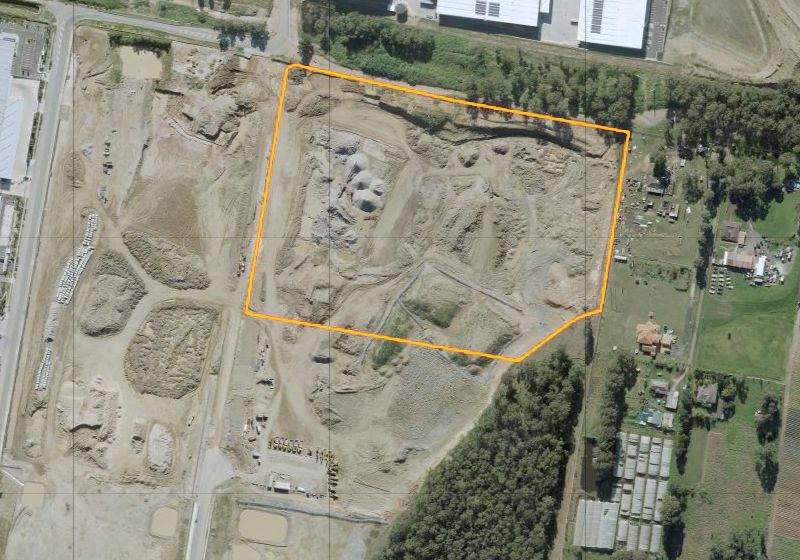
HORSLEY PARK · NSWAerial, May 2022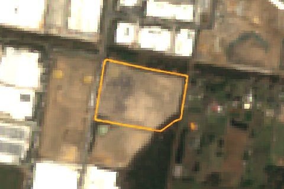
19 Dec 2025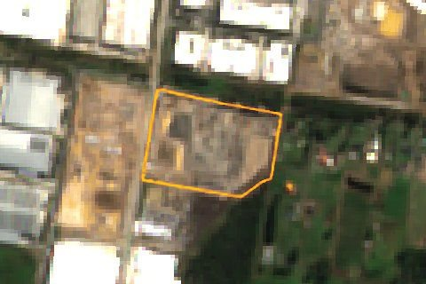
20 Apr 2026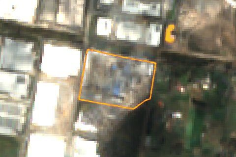
7 Oct 2026- Operator
- NEXTDC (ASX-listed colocation operator)
- Capacity
- 365 MW of IT capacity, upgraded from 300 MW; 250 MW in construction, 115 MW in planning
- Status
- Under construction by Multiplex. Two four-storey buildings on a former quarry, with an on-site 330 kV substation. Completion is scheduled for mid-2027.
See the planning timeline
Other projects take much longer to clear the same system. The largest metropolitan proposal, a 1 GW campus on Mamre Road at Kemps Creek, was filed in September 2025. Thirteen months later it is still under assessment. The EPA lodged its response in April 2026, and the proposal includes 852 diesel generators and 14.4 million litres of diesel storage. Its neighbours show how crowded this stretch of road has become: Microsoft is building at 769 Mamre Road, and CDC has amended its KC1 request at 871–901 Mamre Road from 144 MW to six buildings drawing 1.4 GW.
Mamre Road campus (SYD4), Kemps Creek
A 1 GW campus on a grazing paddock, filed thirteen months ago and still undetermined.
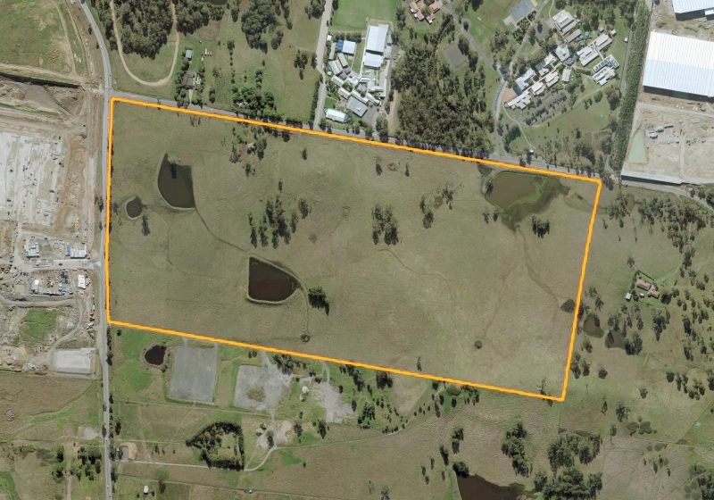
KEMPS CREEK · NSWAerial, May 2022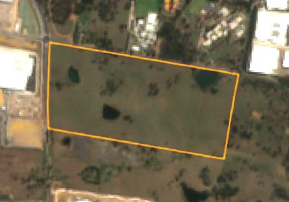
16 Sep 2023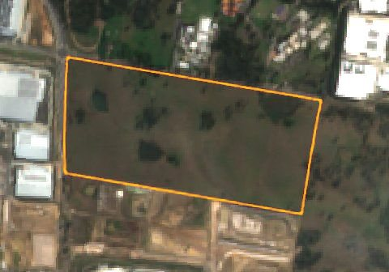
2 Sep 2025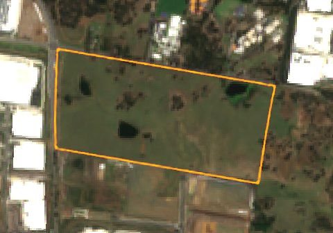
10 Oct 2026- Promoter and buyer
- ISPT (industry super funds' property manager), with AirTrunk named as conditional buyer. The IDA lists the proponent as KNBDC SYD4. No tenant disclosed.
- Capacity
- Up to 1 GW (1.2 GW peak draw reported) across six four-storey buildings and 24 data halls
- Status
- State Significant Development under assessment (SSD-92743706). The proposal includes 852 diesel generators, 936 cooling units and a 38 m height against a 20 m limit. 79 public submissions.
See the planning timeline
Victoria's fast-track pathway moves faster. Most new Melbourne campuses now go through the state's Development Facilitation Program, which takes decisions away from councils. AirTrunk's 354 MW MEL2 at Tullamarine was lodged in December 2024 and had its permit in March 2025. NEXTDC's Corio site took two months, and a Truganina campus four. Seven more applications lodged in 2026 are under assessment, among them AirTrunk's seven-building campus at Mickleham, GreenSquareDC at Spotswood and HyperDC's 400 MW proposal on farmland at Moorabool. The pathway is not a rubber stamp: Monash council refused a 38 MW Centuria proposal at Clayton in September 2026, outside the program.
Environmental rules elsewhere can force a rethink. In Canberra, CDC's proposed 576 MW Hume Campus 3 would on its own exceed CDC's entire existing Canberra portfolio. In October 2026 the ACT Conservator of Flora and Fauna found it likely to have a significant environmental impact, which means it needs a full environmental impact statement and probably a referral under the federal EPBC Act. The 12-hectare site holds 27 mature native trees with hollows used by threatened birds. CDC says it is reassessing the design.
Because the causes of delay are specific to each site, understanding the build-out needs case-by-case tracking. Nobody does this systematically. The Commonwealth's September 2026 consultation on national data centre standards cites investment and electricity estimates but no register of projects. The NSW IDA lists project names but not their capacity. Only an aggregated, project-level view would turn scattered planning files into something governments can act on.
Who is building the data centres, and for whom? Will supply meet demand?
Data centres are developed by four kinds of company. Hyperscalers such as AWS and Microsoft build for their own use. Wholesale and colocation operators such as CDC, NEXTDC and AirTrunk build and run sites and lease the capacity, often a whole building, to cloud and AI companies. AI cloud providers, or neoclouds, such as Firmus and IREN, build to sell GPU compute. Land, property and power promoters, such as Goodman, Zerra, Quinbrook or an energy company, secure land, power and planning and then look for a tenant or buyer.
Australia's pipeline is led by operators, not land promoters. Wholesale and colocation operators account for 60% of the capacity planned by 2030. Promoters account for 31%, and the largest single promoter project is Western Downs, where Anthropic is named as the first tenant. Promoters without a disclosed tenant account for 23% of the 2030 pipeline, against 42% in the UK, 33% in the US and 16% in the EU. Their share has grown as property groups such as Stockland, Goodman, PGIM, Gateway and HyperDC turn warehouses and farmland into data centre sites.5
Hyperscalers lease Australian capacity rather than build it. AWS and Microsoft are directly building only about 4% of the 2030 pipeline: AWS at Glendenning, Eastern Creek and Cobblebank, and Microsoft at Huntingwood and Kemps Creek. In the UK the share is 19%, and in the US and EU 30%. This does not signal weak demand. Both companies have made their largest-ever Australian commitments (A$25bn from Microsoft and A$20bn from AWS to 2029), and much of that money flows through leases with CDC and AirTrunk.
The demand signals are stronger than in the UK. NEXTDC had 740 MW contracted in July 2026 against 288 MW built. In May 2026 CDC signed Australia's largest lease, 555 MW for an unnamed US customer on a long-term contract, which CDC says will take its contracted capacity past 1 GW by FY29. Two frontier AI labs have put their names to Australian sites: Anthropic at Western Downs and OpenAI at S7. CBRE describes Sydney and Melbourne as effectively pre-leased.
Yet 81% of the planned capacity has no publicly named end user, because wholesale operators rarely disclose their customers. Governments therefore cannot tell how much of the pipeline is contracted and how much is speculative. A lease to an unnamed customer and a campus with no customer look identical in the planning record.
Western Downs Digital Park, Kogan
A tenant signed before the council had assessed the application.
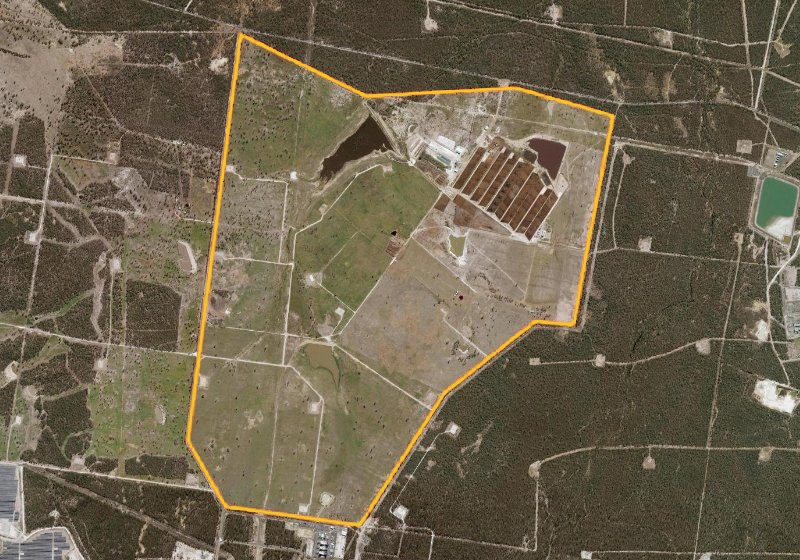
KOGAN · QLDAerial, 2018–19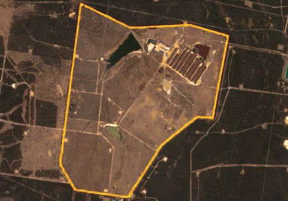
14 Oct 2023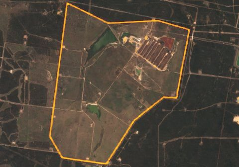
8 Oct 2025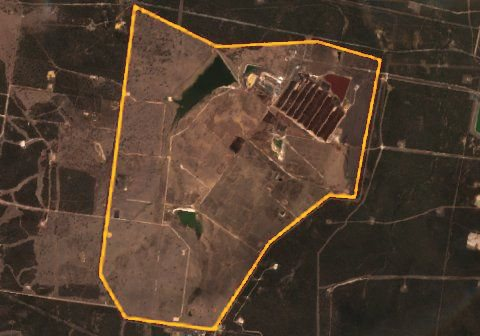
7 Oct 2026- Promoter and tenant
- Zerra DC (applicant WDDP Pty Ltd) with Australian Data Centres and Macquarie Capital. Anthropic has signed a long-term lease for stage one, reportedly to run Claude for user queries rather than training, subject to FIRB approval.
- Capacity
- 1.44 GW across four 360 MW buildings; an engineering report in the application describes six, or 2.16 GW of IT and 3.24 GVA. A$14.5bn for the four-building scheme; 725.5 ha.
- Status
- Impact-assessable development application with the council. First use is targeted for 2027, with a four-to-six-year build. The site sits among gas fields and existing gas generation, and Powerlink's 2025 forecast included no data centre load at all.
See the planning timeline
Neoclouds show how fast announced capacity can change shape. In October 2025 Firmus, CDC and Nvidia announced Project Southgate, a 1.6 GW national programme of AI factories. A year later the CDC partnership was over, with about 42 MW deployed in Melbourne. Firmus has kept the Southgate name for its own sites: three in Tasmania, where it has approval for 288 MW at Bell Bay, and two in South Australia, at Port Augusta and Tailem Bend, backed by a 600 MW energy supply agreement. Its Tasmanian sites together would draw about 444 MW, a large share of an island that already uses roughly all the electricity it generates. Then, on 9 October 2026, Firmus withdrew an ASX float that sought about A$8bn at a valuation near A$44bn, after weak demand from super funds and fund managers. Investors balked at a valuation that had risen several-fold within a year, a company with about 46 MW operating and most contracted revenue still years away, thin escrow on early shareholders, and rising US bond yields. Firmus says it will raise privately, and Nvidia is reportedly considering more funding. Firmus is the only neocloud in our base view, so all 424 MW of that category's 2030 capacity now depends on private capital it has yet to secure.
Firmus Bell Bay AI factory
Approved within ten weeks on an industrial site, but waiting on Hydro Tasmania for power, and now on capital after a failed float.
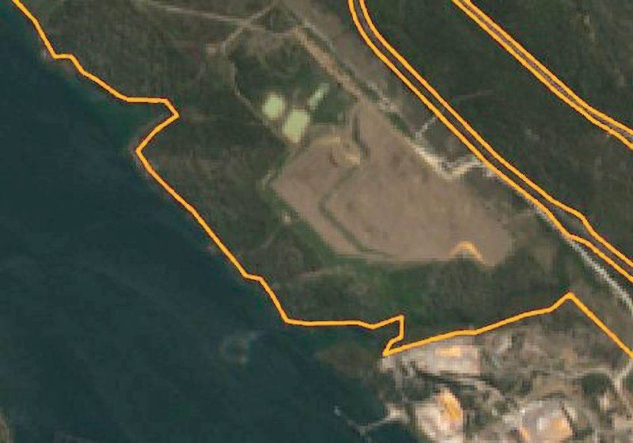
BELL BAY · TASSentinel-2, 23 Oct 2026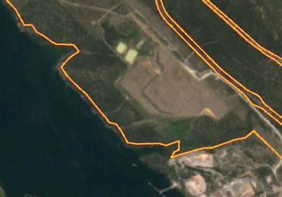
21 Nov 2025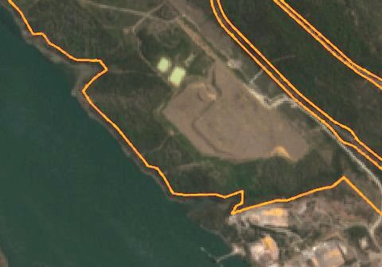
26 Jan 2026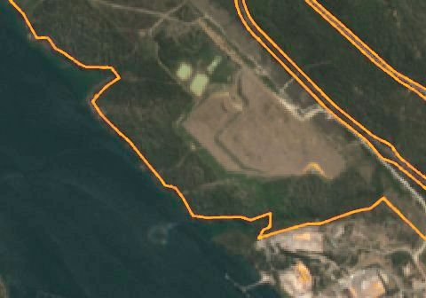
23 Oct 2026- Developer
- Firmus (AI cloud provider), formerly partnered with CDC and Nvidia on Project Southgate. Site GEE01.
- Capacity
- 288 MW of IT capacity in two AI data hall buildings, connected to the existing 220 kV line between Sheffield and George Town. Firmus's three Tasmanian sites would draw about 444 MW.
- Status
- Approved 6–1 by George Town Council in August 2026, with conditions on its backup diesel generators. Hydro Tasmania expects to decide on supply by the end of 2026. Firmus asks for 2 MW of new renewables per MW of demand.
Will supply meet demand, or outrun it? The usual answer is that demand is effectively unlimited. CBA's central case still assumes only about 7 GW is feasible by the mid-2030s, under a third of the 23.4 GW proposed in our dataset. AEMO's demand forecast implies 5.5–6.5 GW of additional capacity by 2035–36, about two-fifths of the 16 GW the base pipeline adds by then. Like the UK's government forecasts, these are estimates of demand for compute, not of demand for compute located in Australia. The case for hosting regional AI workloads here rests on assumptions about prices, latency and sovereignty that have not been tested.
None of this means government should stop supporting the build-out. It does mean governments need to know which projects have contracted demand and which are speculative, because the two need different policy. A contracted project held up by a grid connection needs the grid fixed. A speculative one may simply be waiting for a customer that never arrives.
What is the compute for: training AI models or running them? Where should each go?
AI compute does two different jobs, and they want different places. Training builds a model: a run that can last weeks or months on tens of thousands of chips, and that cares about cheap, abundant power far more than where it sits. Inference runs the model. In the words of Anthropic's prospectus, it "occurs each time a user or agent interacts with an AI system". It runs around the clock, grows with use, and for chat, voice and copilots it needs to be close to users and, increasingly, to stay within national borders.
Inference is overtaking training. McKinsey estimates that inference made up about 48% of global AI data centre demand in 2025 (21 of 44 GW) and will reach about 60% by 2030 (93 of 155 GW). Deloitte puts inference at two-thirds of AI compute already in 2026. Agents push this further, because each task chains many model calls.6
Global AI data centre demand by workload, GW
Anthropic, compute and infrastructure expense, US$bn
Anthropic's S-1 shows what that shift looks like inside one lab. Its compute and infrastructure expense rose from US$0.4bn in 2023 to US$7.3bn in 2025, and to US$8.9bn in the first half of 2026 alone, against US$16.3bn of revenue. The filing says the company "significantly underestimated" its compute needs, leaving it capacity constrained, and that agentic workloads "consume significantly more compute per user interaction" than single requests. It is moving from renting cloud capacity to "directly leased chips that are hosted in dedicated data center facilities", and it lists delays "in securing energy, water, and other critical services" as a risk. Western Downs, where Anthropic has signed for stage one, is reportedly intended to serve Claude to users rather than to train models.
For Australia the distinction changes where data centres should go. Inference for Australian users and government data has to be onshore, and much of it near Sydney and Melbourne, which is why the metropolitan pipeline is contracted and why operators are willing to queue for Western Sydney grid connections. Training, and batch or agentic work that tolerates a few extra milliseconds, can go wherever power is cheapest. That is the logic of the regional gigawatt proposals: Western Downs beside gas fields, Gregadoo where HumeLink and EnergyConnect meet at Wagga Wagga, Firmus in Tasmania and at Port Augusta, and Meridien in the Kimberley. These campuses compete with the US, the Gulf and South-East Asia on power price, not with Sydney on latency.
This also changes the energy arithmetic. Inference fleets run hot and steady, so as they mature they move towards the top of our 40–70% utilisation range, and their load grows with usage rather than arriving in one training run. Governments should therefore plan for two different things: firm, sovereign inference capacity near cities, sized to demand that will keep growing; and a smaller number of power-sited regional campuses that are only worth having if they bring new generation with them.
Where in the country are the planned data centres? Can the grid and the renewable energy zones keep up?
Australia's existing data centres are heavily concentrated: about 61% of capacity is in NSW and the ACT, and a third in Victoria. The rest of the country holds a few per cent between them.
The pipeline spreads capacity a little, but Western Sydney remains the centre of gravity. By 2030 NSW and the ACT would still hold 56% of national capacity and Victoria 25%. Queensland would rise to 11%, through Western Downs and Supernode, and Western Australia and Tasmania to about 4% each. Within NSW, fourteen projects in a single 20 km belt of Western Sydney, from Marsden Park and Glendenning down to Kemps Creek and Wetherill Park, would supply 35% of all the capacity added nationally by 2030. Melbourne's west and north are the second cluster, with eleven campuses between Truganina, Laverton, Spotswood, Tullamarine, Mickleham and South Morang. The regional gigawatt proposals at Wagga Wagga, Port Augusta, Tailem Bend, Tungkillo, Bundey, Weddell and in the Kimberley would change the picture, but only Wagga Wagga and the Kimberley have entered a planning or environmental process.
Running these data centres will need a lot of energy, concentrated on one network. If the base pipeline is delivered, Australian data centres could use 51–84 TWh of electricity a year by 2030. That is 26–43% of all electricity used in the NEM and Western Australia in 2025, and three to six times AEMO's own 15 TWh forecast for 2029–30.7 The load falls unevenly (Figure 5). NSW data centres could use between 44% and 74% of the electricity the state used in 2025, and by 2035 between 69% and 118%, more than the whole state used at high utilisation. Victoria's would reach 31–51%. These numbers are not a forecast. They show that the pipeline, as filed, cannot be connected on the timetable developers publish: three of NSW's four remaining coal stations close by 2033.
The grid, not planning, is the binding constraint in Sydney. In June 2026 Transgrid told proponents it had signed agreements for about 1.5 GW of data centre load in Western Sydney, had more than 8 GW in advanced discussions, and would have no transmission capacity for new connections there beyond 2033. It pointed developers to the Hunter and the Riverina instead. AirTrunk's 540 MW Loxford campus near Kurri Kurri and CDC's 1.4 GW Gregadoo proposal near Wagga Wagga are the first responses. Modelling for the Clean Energy Finance Corporation found that without new renewables, data centre growth would push 2035 wholesale prices up 26% in NSW and 23% in Victoria. Adding 3.2 GW of wind and solar and 1.9 GW of storage cuts that to 3% and 2%.
How much generation and transmission has to be built, and is it being built?
Powering the pipeline would take a second renewable fleet. Supplying the extra 45–79 TWh that the base pipeline would use by 2030 takes roughly 16–28 GW of new wind and solar at a typical one-third capacity factor, before firming. The NEM has about 23 GW of utility-scale wind and solar today. Even without data centres beyond AEMO's own forecast, the grid needs about 18 GW more wind and solar by 2030 to reach 82% renewables, and only about 12% of that is under construction. The best year on record added 4.4 GW of renewables and storage (Figure 6).8
Renewable energy zones are where that generation is meant to go, and their transmission is late. NSW has declared five zones with about 18.5 GW of intended capacity (Figure 7). Only two will have new transmission before 2030: Central-West Orana, where lines are now being strung for energisation in 2028, and the South West, served by EnergyConnect and HumeLink. New England, the largest at 8 GW, will not be connected until 2031 for its first stage and 2033 for its second. The Hunter Transmission Project, which closes the northern loop of the Sydney Ring that feeds Western Sydney, is due in 2028–29. In Victoria, VNI West has slipped two years to late 2030 and the Western Renewables Link to about 2029, and the Auditor-General expects the state to miss its 2030 renewables and 2032 offshore wind targets. Queensland scrapped its renewable energy zones and its legislated renewable targets in December 2025 and extended its coal plants, which is part of why its largest data centre sits beside gas.
The data centre pipeline and the renewable energy zones are being planned separately. Most new data centre capacity is in Western Sydney and western Melbourne, hundreds of kilometres from the zones that would supply it, and draws on the same transmission corridors that are already late. Only a handful of proposals sit beside a zone or a new transmission hub: CDC's Gregadoo campus at Wagga Wagga, AirTrunk's Loxford campus in the Hunter–Central Coast zone, IREN at Bundey, and Firmus at Bell Bay and Port Augusta. None of the IDA's endorsed projects is in a renewable energy zone.
Some developers are planning to go around the grid entirely. A 673 MW gas plant has been proposed alongside a data campus at Moss Vale. The Weddell precinct near Darwin would be gas-powered, and Western Downs sits beside existing gas generation. That sits uneasily with the Commonwealth's expectation that new data centres bring new renewable generation.
Water is a local problem rather than a national one, and it falls on Sydney. Australian data centres used an estimated 5.5 GL in 2025, about 0.04% of industrial water. Sydney's data centre use is forecast to rise from about 4 GL to 10.5 GL by 2030, and Sydney Water estimates data centres could take up to a fifth of the city's drinking water by 2035. A single approved campus, AWS's 194 MW Glendenning site, expects to use about 49 ML a year and up to 6.8 ML on a peak day, mostly for evaporative cooling. Its cooling technology had not been finally chosen at approval.9
As in the UK, cooling choices are a structural blind spot, but rules are coming. The Commonwealth's September 2026 consultation proposes design PUE targets, a national water-use standard and a hierarchy that makes potable water the last resort. Victoria's Sustainable Data Centre Action Plan would require recycled or non-drinking water for water-intensive cooling. Until these apply, the trade-off between electricity and water is made case by case in planning conditions.
Compute for access: can Australia become the second home for frontier AI training, and what should it ask for?
A new argument for the build-out has emerged in 2026. It is not about cloud capacity for Australian businesses but about leverage. Only the US and China train frontier models. Australia will not build its own, and in June 2026 it learned how quickly access can be withdrawn, when Anthropic suspended access to two of its newest models for almost three weeks to comply with US export controls.10 The proposal is that Australia make itself indispensable by hosting a large share of American labs' compute, and trade that for guaranteed access to their best models.
There are three versions of the idea. The government's, set out by Assistant Minister Andrew Charlton, is to "climb the stack". Expectation 5 of the March 2026 data centre expectations would require large campuses to contribute to the local AI ecosystem: compute on favourable terms for researchers and start-ups, research partnerships, and capability that can grow into sovereign models for national security, health and other sensitive uses. Charlton treats compute for access as one tool among several, alongside alignment with the US, a diversity of model suppliers and open-weight models hosted onshore. Janet Egan of CNAS argues that only training compute gives real leverage. Labs want to concentrate each training run in one or two places, so a host country becomes part of their core value chain in a way an inference site, which can be built anywhere, does not. In return Australia could ask for three kinds of access: to frontier models for Australians, to a share of compute for public-interest research, and to information, through incident reporting and testing with the Australian AI Safety Institute. Joseph Walker's working target, 10–15 GW of AI compute by 2030, about a tenth of the global total, frames the scale such leverage might need. Walker himself calls the leverage argument "very tenuous".
The leverage is soft, and its proponents say so. Egan describes the goal as being "a trusted partner" that a US company will lobby to keep inside the tent, not a supplier that can hold Washington to ransom. If Australia cut off a lab's compute, Washington could escalate against Australia instead, and Australia would still depend on Taiwan for chips. The benefit is real but hard to write into a contract: penalties for withdrawing access, conditions on grid connection, and information-sharing duties are all possible, and none has been tested.
Our inventory does not yet contain a second home for frontier training. Ten regional campuses of 500 MW or more propose about 9.9 GW of IT capacity, which matches the scale of the ambition (Figure 8). But six are announced only, and only one, Western Downs, has a named frontier tenant, reportedly for inference. In our base view these campuses deliver about 1.2 GW by 2030. The metropolitan gigawatt proposals at Mamre Road, Kemps Creek and Eastern Creek sit on a Western Sydney grid that Transgrid says will have no room for new connections after 2033. Anthropic's reported interest in up to 5 GW in NSW, which internal government emails described as initial interest rather than a plan, is almost as large as all the capacity NSW expects to add by 2030 in our base view (5.2 GW).
The energy maths points to the outback. Walker and the energy economist Tim Nelson estimate that 10–15 GW running at 75% utilisation would use 66–99 TWh a year, a third to half of today's NEM, and need 26–39 GW of new wind and solar: 6.5–10 GW a year against a record of about 4.3 GW. Nelson's answer is to take the load to the resource: campuses in places like far-west NSW, beside existing easements and the Moomba gas pipelines, running on their own embedded wind, solar, storage and gas, with only a thin grid connection. That only works if training loads are flexible and communities welcome them, but it is the one configuration that does not compete with Sydney's households for transmission that is already late (Figures 6 and 7). Japan, which is restarting nuclear reactors and already has a text and data mining exception, is the obvious alternative host.
Copyright is the gate, and both sides have a case. Australia has no copyright exception for training AI. The government ruled one out in October 2025, and in July 2026 the Prime Minister said creators must keep control of their work, including its price, and that anything less "is theft". The Attorney-General's reference group is weighing statutory licensing, collective licensing and the current voluntary system. The labs' position is that paying for licences in Australia could undermine their fair-use defence in the US, where one test is whether a use harms a licensing market, so copyright is a red line rather than a price. Anthropic's investment was reportedly contingent on "clarity of copyright settings", and in September 2026 Anthropic and OpenAI asked a parliamentary inquiry for conditional approval tied to investment and support for creators. Good Ancestors has proposed a training permit: a fee, an opt-out for Australian rights holders and help with grid connections, kept separate from a public fund for creators modelled on the Public Lending Right. A coalition of 22 rights-holder organisations calls that a text and data mining exception under another name. Sceptics also ask whether the red line is a negotiating position from companies valued at hundreds of billions of dollars that could afford licences. Egan adds a less discussed problem: current law on temporary copies may not cover AI systems that keep context and memory across sessions, which would affect inference as well as training.11
If Australia pursues the strategy, it should be explicit about the exchange. Egan argues the window is "a month or months, rather than a year", before other countries move or the labs commit elsewhere. Whatever the copyright answer, the bargain can be written down:
What Australia would offer
- Designated compute zones with fast, predictable approvals and grid or off-grid power (special compute zones)
- A defined legal position on training, by licence, permit or exception, decided once rather than project by project
- Priority for connection and transmission in those zones, paid for by the developer
- A trusted Five Eyes jurisdiction for sensitive and classified workloads
What Australia would ask for
- Written commitments on frontier model access and continuity for Australian government and users, with penalties
- A reserved share of compute on favourable terms for Australian researchers and start-ups (Expectation 5)
- Incident reporting, model testing and information sharing with the Australian AI Safety Institute
- New generation at least equal to use, no potable water for cooling, and benefits for host communities
- Research staff and partnerships located in Australia
The risks run both ways. If Australia moves slowly, the training build goes to Texas or Japan and its leverage disappears. If it moves fast, it may trade away creators' rights for commitments it cannot enforce, or build campuses whose financing is fragile. Firmus's failed float in October 2026 is a reminder that the capital behind AI campuses can disappear faster than planning approvals arrive. The test for any deal is whether what Australia receives is specific, verifiable and lasts longer than the next model release.
Is the main state intervention, the NSW Investment Delivery Authority, doing its job? If not, how could it be improved?
Australia has no equivalent of the UK's AI Growth Zones. Its main intervention to support the build-out is in NSW, where most of the pipeline sits. On 27 March 2026 the NSW Investment Delivery Authority endorsed 15 data centre projects worth A$51.9bn for coordinated, prioritised support, and screened out a further A$40.7bn of proposals it judged premature or speculative.12 Endorsement does not replace planning approval, and the government does not publish the capacity, developer or value of individual projects.
The IDA covers far more of the pipeline than the UK's Growth Zones do. Twelve of the endorsed projects can now be matched to a planning record. They would deliver about 2.6 GW by 2030, 26% of the capacity added nationally by then. The UK's five Growth Zones cover 13% of its 2030 capacity.
But there is little evidence yet that endorsement speeds projects up. Figure 9 tracks each matched project. Two, NEXTDC's S4 and the Stockland and EdgeConneX campus at Wetherill Park, were already approved before endorsement. Three, AWS at Glendenning, Microsoft at Huntingwood and Stockland at Khartoum Road, were approved about six months after it, which is not obviously faster than other NSW approvals: Marsden Park took under twelve months from lodgement without the IDA, and Victoria's Development Facilitation Program has approved Melbourne campuses within three or four months. The other seven, including the two largest, Mamre Road and S7, remain under assessment or scoping. Three endorsed projects publish no capacity at all: AIMS at Bella Vista, the Lane Cove DC Alliance at 16–20 Mars Road, and one undisclosed project.
The IDA is a list, not a zone. Endorsement brings coordination, but no land boundary, no standing planning permission and no reserved grid capacity. That matters because power is the binding constraint. Endorsing more Western Sydney projects cannot help if Transgrid cannot connect them after 2033.
Five measures could change this. First, make zones real places. Tie data centre support to defined areas where power can be delivered, such as the Hunter–Central Coast and South-West Renewable Energy Zones, and publish their boundaries. Second, give those zones standing planning permission for data centres that meet set conditions on water, noise, diesel generation and new renewables, so each project does not renegotiate them. Third, reserve transmission capacity in each zone and publish the date it will be available. NSW's proposed connection bonds and upgrade fees would help clear speculative requests from the queue. Fourth, find credible customers: require developers to state at lodgement whether a tenant is contracted, even if confidentially, so governments can tell contracted demand from speculation. Fifth, attach the bargain. Grid priority and endorsement are what developers want most, so they are where Expectation 5's research compute, community benefits and, for frontier labs, access commitments should be written in.
Lastly, success needs to be measurable. Publish the capacity, stage and expected completion of every endorsed project, and report each year how much capacity endorsement has accelerated. The Commonwealth's national standards, due to be legislated in early 2027, are the natural place to require a national register of data centres above 30 MW.
Conclusion
Australia has good reasons to build a large, sovereign data centre fleet, and it is already building faster and further along the planning system than the UK. The risks are different. Australia's pipeline is mostly led by operators that build against contracts, but it is concentrating on one constrained grid in Western Sydney. It depends on a few dozen very large projects, and its water and energy footprint is decided project by project. To manage that, governments need to know how much is planned and where, whether projects have customers, how they will be cooled and powered, and whether their interventions are working. Most of all, they need policies aimed at the binding constraint, which in Australia is the grid. If Australia also wants to be a second home for frontier training, it will have to decide its copyright settings, put the campuses where power can be built quickly, and write down what it gets in return.
Notes
- IT capacity is the power that reaches servers. Grid or peak power is higher because cooling and losses also draw power. Where a developer publishes only grid, total power or peak figures (15 projects), we divide by a power usage effectiveness (PUE) of 1.3. Where no completion date is published, we follow Science Works: capacity starts two years from now if under construction (2028), and about four years from now if in the planning system (2029 if approved, 2030 otherwise). Announced-only projects start in 2031. Campuses over 150 MW then ramp at 200 MW a year. Published dates cover 34% of the capacity due by 2030. The inventory covers projects with a published capacity, found by sweeping the NSW Major Projects portal, Victoria's ministerial permits register (Development Facilitation Program), ACT environmental significance opinions, council agendas in Queensland, Western Australia and Tasmania, ASX filings and trade press. Proposals with no published capacity are listed but not counted: Goodman at 433 Mount Atkinson Road, Truganina; Zerra at the former Ford site in Campbellfield; Galileo at Clyde North; AIMS at Bella Vista; the Lane Cove DC Alliance; Northern Concept at Swanbank; and the Southern Highlands Data Campus, whose 673 MW gas plant is before the NSW Government. Withdrawn proposals, such as AWS's 40 MW at Smeaton Grange and GreenSquareDC's Belmont and Hazelmere schemes in Perth, are excluded. Operating sites are counted in the baseline rather than as projects.
- Since June 2023, NSW data centres using more than 15 MW are State Significant Development. Below that, projects with a capital value over $30 million go to a regional planning panel. Source: NSW Department of Planning.
- Estimates of Australia's installed capacity range from 1.3 to 2.2 GW depending on whether they count live, built or rated capacity. Our 1.75 GW combines CBRE's Q1 2026 figures for Sydney and Melbourne with estimates for other cities. Our 2020 value (~0.6 GW) scales M3 Property's occupancy series to the same base.
- UK, EU-27 and US figures are taken from Science Works, which uses S&P Global's Q4 2025 data with inference for missing records. The UK 2030 value used here is Science Works' base pipeline view (7.4 GW). Australian figures use this report's own dataset, which has a different coverage and timing rule, so cross-country comparisons are indicative.
- Developer types are our classification. Property, land and energy companies are treated as promoters: Goodman, Stockland, ISPT, PGIM, Gateway Capital, Markham, Centuria, HyperDC, DCG Admin, Zerra, Quinbrook, Quantum DC, 1414 Degrees, Gingerah and Beetaloo. CDC, NEXTDC, AirTrunk, STACK, GreenSquareDC, Dover, DigiCo, DCI, Digital Realty, EdgeConneX, Macquarie DC and Keppel are treated as operators. CDC's 555 MW lease to an unnamed US customer counts as no named end user.
- McKinsey, "The future of AI workloads" (February 2026), chart values for 2025 and 2030. Deloitte estimate as cited by Macquarie Data Centres (June 2026). Anthropic PBC, Form S-1 (26 October 2026): compute and infrastructure expense of US$433m (2023), US$2,522m (2024), US$7,326m (2025), US$2,334m (H1 2025) and US$8,945m (H1 2026); revenue US$16,286m in H1 2026. The S-1 does not separate training from inference spending or name data centre sites. The inference use at Western Downs is as reported by the ABC.
- Today's use is from AEMO's FY26 regional split of about 5 TWh. New capacity is modelled at PUE 1.3 and 40–70% utilisation; AEMO assumes hyperscale sites reach about 68% at maturity, and today's fleet uses about 27% of its connections. State consumption figures for 2024–25 are approximate and consistent with AEMO's 178 TWh NEM total. Off-grid projects in the Kimberley and the Northern Territory are excluded.
- Wind and solar needed for data centres = added 2030 consumption ÷ (8.76 TWh per GW-year × 32%). This ignores firming, storage and transmission losses, so it understates what must be built. The 18 GW figure is additional to projects already expected to connect. The 4.4 GW record covers renewables and storage reaching full output in the year to June 2025.
- Water figures are from Mandala and Data Centres Australia (2025) via the Climate Council, the PM&C consultation paper (Sept 2026), and the Glendenning Road EIS as reported by W.Media.
- Anthropic suspended access to Claude Fable 5 and Claude Mythos 5 from 12 June to 1 July 2026 to comply with US Department of Commerce export controls, and restored it when the controls were lifted (Anthropic statement). The three versions of compute for access are drawn from Joseph Walker's Compute in Australia podcast series: Andrew Charlton (recorded 7 August 2026), Janet Egan (24 August 2026) and Tim Nelson (30 September 2026).
- Copyright positions as reported by Gilbert + Tobin (July 2026), Mondaq (July 2026), The Next Web citing Reuters (September 2026), Good Ancestors in The Strategist (June 2026) and the rights-holder coalition's letter (July 2026). The point about temporary copies and inference is Janet Egan's, made on the record but not as a legal opinion. This report does not offer legal advice.
- IDA projects as listed by the NSW Government and W.Media, 27 March 2026. The NSW Government lists 14 data centre projects by name and says there are 15. We matched twelve to planning records: S4, S5, S7, Mamre Road, Project Atlas, Glendenning Road, Honeman Close, 78 Lockwood Road (STACK), GreenSquareDC SYD1 Stage 2, and Stockland's 2 Davis Road, 90 Aldington Road and Khartoum Road (listed as "Project A"). Stockland names its IDA projects as Wetherill Park, Kemps Creek and Macquarie Park.
Sources
Australian Dynamism
An independent project on Australian policy, infrastructure and technology. This report adapts the structure and method of Science Works' The UK Data Centre Pipeline by Henning Zschietzschmann to Australian data, so the two can be read side by side. All Australian data and analysis are our own.